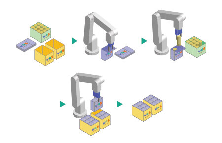
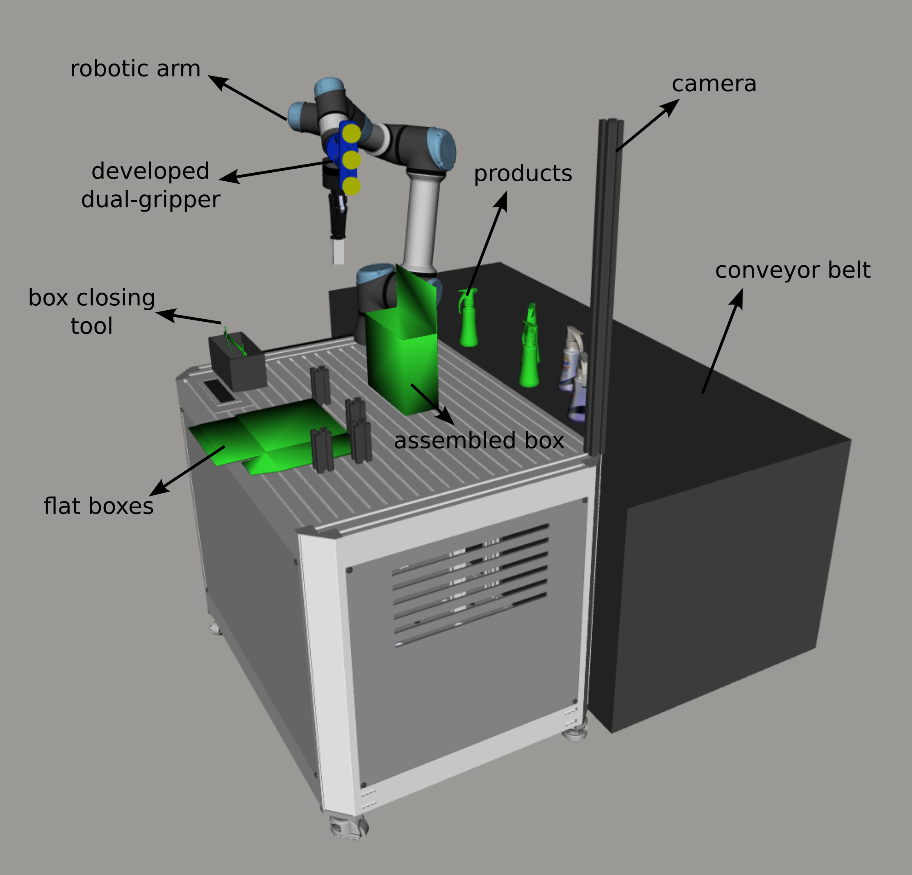
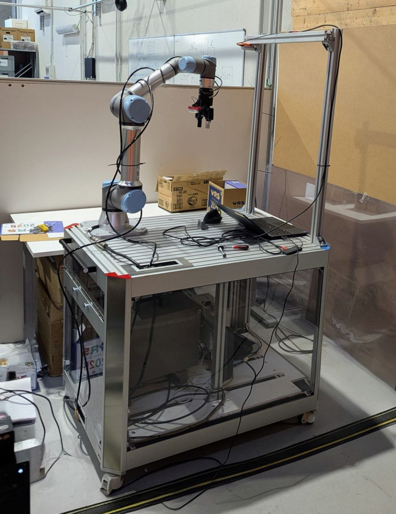
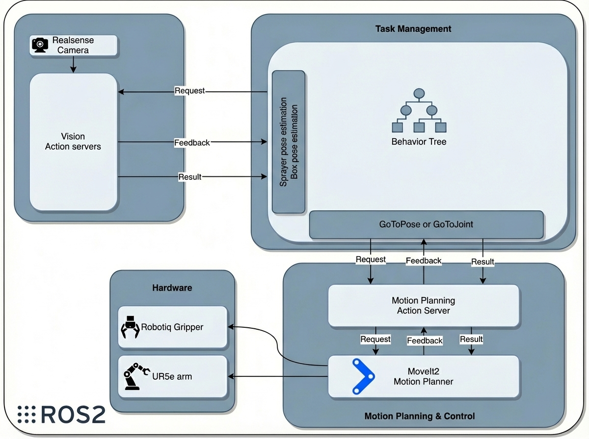
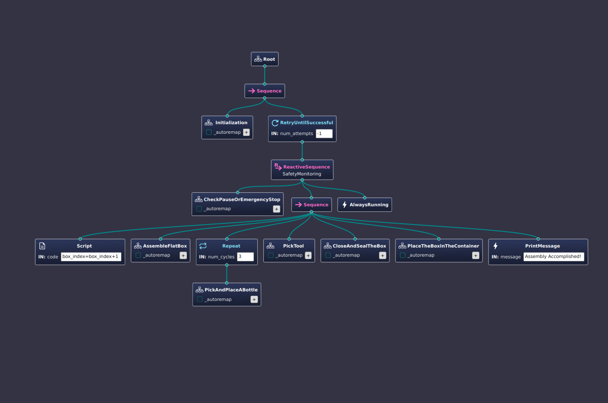
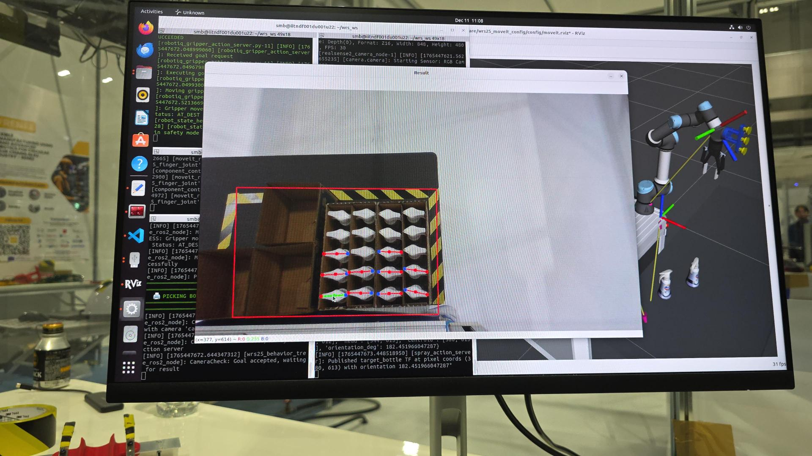
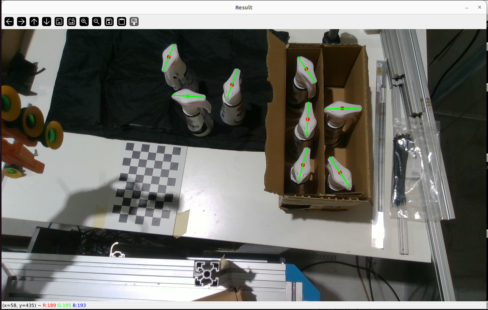
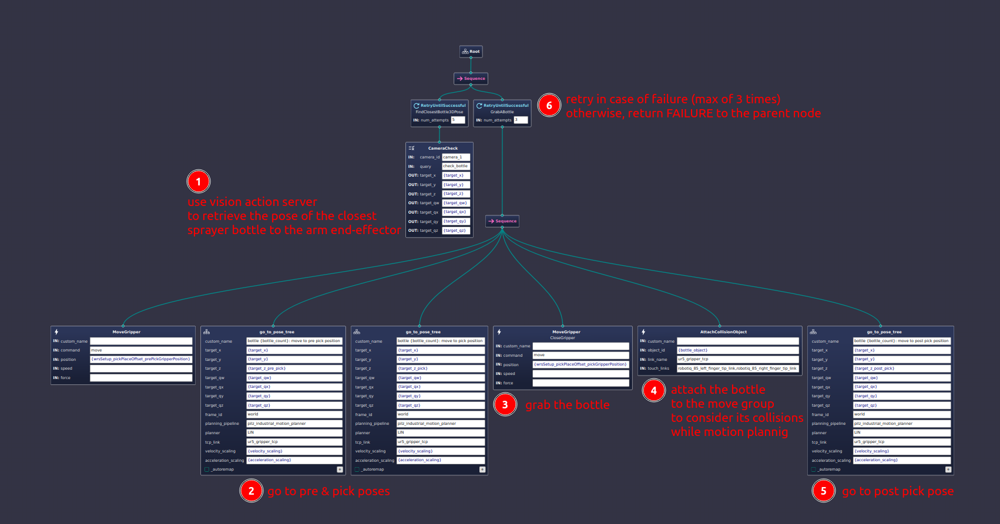

Autonomous Robotic Cell for Multi-Stage Logistics Assembly and Packaging
Developed and validated at the World Robot Summit 2025 Manufacturing Challenge (Aichi, Japan). Supported by EU Horizon projects RENÉE & MASTERLY.
Project Overview
The Goal
This system was developed to compete in the World Robot Summit (WRS) 2025 – Manufacturing Robot Category (MRC) in Aichi, Japan — a challenge organised by Japan's Ministry of Economy, Trade and Industry (METI) that evaluates robotic packaging systems against task completion rate, cycle time, and total hardware cost. The work was carried out within the EU Horizon Europe projects RENÉE (GA No. 101138415) and MASTERLY (GA No. 101091800), both targeting modular, adaptable robotic systems. The central challenge was integrating delicate assembly, vision-guided picking, and high-reliability sealing into a single autonomous pipeline under live competition time pressure.
Key Outcomes
- 100% pick success rate achieved in Run 2 at WRS 2025 (improved from 66.67% in Run 1 after between-run grasp-parameter adjustment).
- 20.67 s/bottle mean cycle time in the official competition run.
- Total hardware cost below 500 EUR (excluding the robot arm), demonstrating low-cost feasibility.
- Designed a custom dual-mode wrist-mounted end-effector combining vacuum suction and parallel-jaw grasping in a single 3D-printed unit — eliminating tool-change overhead.
- Implemented a four-level planning fallback (Pilz LIN → Pilz PTP → CHOMP → OMPL RRTConnect) that autonomously recovered from planning failures without interrupting task execution.
- Full end-to-end system validated under live competition conditions; execution trace recorded as structured ROS2 bags for post-hoc analysis.
Tech Stack
My Role
As the Project Lead and primary engineer, my involvement spanned the entire lifecycle of the robotic cell, from initial design and core software development to final system integration and performance validation.
- Project Lead: Defined scope, architecture, and requirements for WRS 2025 MRC compliance; managed timeline and resources; and conducted risk analysis for complex integration.
- Software Developer: Developed core functionality using ROS 2 Humble, authoring custom nodes for peripheral control. Integrated the perception pipeline by developing a ROS 2 Action Server for vision requests, which encapsulates the developed YOLO object detection and pose estimation models within our team. Created custom Behavior Tree (BT.CPP V4) nodes to interface with ROS 2 Actions and Services for task-specific control.
- Control & Motion Planning: Configured and fine-tuned MoveIt 2 for the Universal Robots platform, defining collision objects and planning groups. * Implemented a multi-planner strategy utilizing OMPL for long-distance, general motions, and Pilz industrial motion planners (LIN, PTP, CIRC) for precision tasks like linear pick-and-place and semi-circular box assembly movements. * Developed Behavior Tree (BT) nodes capable of dynamically adapting the planning scene (e.g., adding/removing collision objects for gripped items like bottles or assembled boxes) based on the robot's current status. * Integrated cached trajectory approaches to ensure faster, more reliable, and repeatable execution of frequently used paths during high-reliability operations.
- Integration and Experimentation: Executed the complete system integration, successfully interfacing the Motion Planning, Vision, and Behavior Tree components within the ROS 2 framework. * Performed detailed camera calibration (Hand-Eye) to achieve high positional accuracy necessary for assembly tasks. * Designed and conducted comprehensive experimental trials, gathering performance metrics (cycle time, accuracy, success rate) and performing iterative system tuning and optimization to maximize reliability under competition constraints.
System Design

Challenge Goal
The challenge consisted of assembling flat cardboard boxes, filling them with bottles, sealing the box, and finally placing the box on a conveyor belt. The robotic cell is designed to be able to handle the entire workflow autonomously.
Hardware Overview
The workcell is built around a UR5e collaborative manipulator mounted on a rigid aluminium profile frame. All task-relevant fixtures are integrated into the same frame, making the system fully self-contained. The key hardware innovation is a custom dual-mode wrist-mounted end-effector: three suction cups and two parallel-jaw fingers are arranged at 90° on a common 3D-printed PLA mounting plate, enabling autonomous switching between grasping modalities (vacuum for cardboard; jaw for bottles) without any mechanical reconfiguration. An Intel RealSense D435i camera is mounted overhead in a fixed position, decoupling perception from manipulation and providing a stable viewpoint for the vision pipeline. Additional custom fixtures on the frame include:
- A Universal Robots UR5e robotic arm (850 mm reach, 5 kg payload)
- Custom dual-mode end-effector (3 suction cups + parallel-jaw fingers, 3D-printed)
- Intel RealSense D435i (overhead, fixed mount — used as RGB only)
- Custom two-horns closing tool for sealing cardboard flaps
- Custom sticker dispenser for label application
- Aluminium profile frame (self-contained, no external infrastructure needed)


Software Design
Software Architecture
The software stack is built on ROS2 Humble with four strictly separated layers: Perception (YOLOv8 inference + planar homography), Task Management (BehaviorTree.CPP v4), Motion Planning (MoveIt2 with Pilz + OMPL), and Hardware Interfacing (UR ROS2 driver + digital I/O). The Behaviour Tree is the sole orchestrator — perception, planning, and hardware interfacing communicate with it exclusively through typed ROS2 action and service interfaces. This strict separation means each layer can be independently validated and replaced without propagating structural changes. The full execution trace — BT node states, perception outputs, and joint trajectories — is recorded as a structured ROS2 bag for post-hoc analysis and regression testing.

Task Management with Behaviour Trees
To manage the complex sequence of actions (folding the box, picking, placing, sealing), I implemented a Behaviour Tree (BT). BTs are ideal for robotics as they provide a modular and reactive way to define task logic. The tree was structured with high-level sequences like "AssembleBox" and "PackItems", which were composed of smaller, reusable actions. This approach made the system robust and easy to debug, as the state of the robot's logic was always clear and could react to sensor feedback or failures in a predictable manner. There is a BT node that continuously monitors the paused or emergency stop states and stops the robot and resume the tasks after the stop state is cleared.

Motion Planning
Motion planning is handled by MoveIt2 with a multi-planner strategy selected per task context via BT nodes:
- Pilz LIN — straight-line Cartesian paths for all pre-grasp approach, descent, retract, and place moves
- Pilz PTP — joint-space transitions to home and pre-pick configurations
- Pilz CIRC — circular arc motions for box erection (computed on-the-fly from live TCP pose and carton width)
- OMPL (RRTConnect) — collision-aware paths for long-distance general motions
Planning robustness is handled by a reusable go_to_pose_tree subtree that wraps every Cartesian goal in a four-level Fallback: Pilz LIN → Pilz PTP → CHOMP → OMPL RRTConnect. This cascade recovers from planning failures automatically without interrupting task execution. For paths requiring the tightest positional repeatability (sticker dispenser approach, two-horns closing tool engagement), execution is delegated directly to URScript, bypassing MoveIt2 and exploiting the UR5e controller's native path interpolation at its full control frequency. The MoveIt2 planning scene is kept geometrically consistent throughout the run: erected box models are inserted as collision objects after box erection and removed upon transfer to the delivery case.
Vision Pipeline — Planar Homography
The perception layer subscribes to the RGB stream from the fixed overhead RealSense D435i and runs a fine-tuned YOLOv8 model constrained to a predefined image window corresponding to the bottle supply region, suppressing false positives from workcell fixtures and background clutter without per-frame masking overhead. For each detection, the bounding-box centroid is mapped to the robot base frame through a pre-computed planar homography — calibrated against the known, constant table height. No depth data from the sensor is consumed at runtime; the 3D-to-2D projection is resolved entirely through this geometric constraint, making the pipeline fast and robust to depth sensor noise. Critically, scene estimation is re-executed at every BT tick (not once per pick cycle), ensuring that contact-induced bottle displacement or occlusion removal from prior picks is reflected in pose estimates before each grasp is committed.
Vision Pipeline Results


Competition Results — WRS 2025 (Aichi, Japan)
The system was evaluated during the official WRS 2025 Manufacturing Challenge. Each run required autonomously erecting a flat cardboard box, packing three bottles into designated slots, sealing, and transferring the carton — within a fixed time window.
| Metric | Run 1 | Run 2 |
|---|---|---|
| Bottles attempted | 3 | 3 |
| Successfully packed | 2 | 3 |
| Pick success rate | 66.67% | 100% |
| Avg. cycle time (s/bottle) | 21.03 s | 20.67 s |
| Total run time | 198 s | 240 s |
| Total hardware cost (excl. robot arm) | < 500 EUR | |
The longer total run time in Run 2 reflects a safety verification pause inserted after the between-run grasp parameter adjustment; this pause was included in the official timing.
Challenges & Solutions
Challenge 1: Grasp Failure on Small-Diameter Bottles
In Run 1, one of three bottles failed to be grasped — a 66.67% success rate. Root-cause analysis during the inter-run break identified that a specific combination of small bottle diameter and contact-point location caused the parallel fingers to close on the bottle body rather than securing a stable grip. With only minutes between runs, a full redesign was impossible.
Solution: The pre-grasp approach pose and finger-closing offset parameters were adjusted directly in the BT blackboard configuration (loaded at runtime without recompiling), correcting the approach angle and closing delay for small-diameter profiles. Run 2 achieved 100% pick success with a tighter mean cycle time of 20.67 s/bottle.
Challenge 2: Planning Failures in Constrained Workspaces
The single-arm cell requires the robot to reach across a cluttered workspace with erected cardboard boxes, custom fixtures, and dynamic collision objects. Straight-line Pilz LIN plans occasionally failed when the workspace was most constrained (e.g., after box erection added large collision objects near the arm's path).
Solution: A reusable go_to_pose_tree BT subtree was implemented that wraps every Cartesian goal in a four-level Fallback cascade: Pilz LIN → Pilz PTP → CHOMP → OMPL RRTConnect. Planning failures are handled structurally by the tree, not as exceptions, so the robot autonomously retries with progressively less constrained planners without operator intervention.
Challenge 3: Precision for Sticker Application and Box Sealing
The sticker dispenser pick and two-horns box closing required sub-centimetre repeatability — tolerances tighter than what MoveIt2's Cartesian controller reliably delivered at the required speed.
Solution: For these two specific motion primitives, trajectory execution was delegated directly to URScript, bypassing the MoveIt2 stack entirely and exploiting the UR5e controller's native path interpolation at its full onboard control frequency. This hybrid approach kept MoveIt2 for general planning while using the robot's native controller where repeatability was critical.
Gallery

SubTrees' Structures
Related Publication
"A Low-Cost, Compact, and Modular Robotic System for Automated Bottle Packing"
Industrial Robotics Facility, Istituto Italiano di Tecnologia (IIT), Genova, Italy — manuscript in preparation